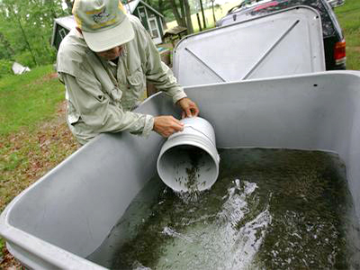

WELCOME TO TRAA
Thames River Anglers Association
Dedication Today for Tomorrow For the enhancement, protection and promotion of a viable, multi-species fishery within the Thames River watershed.

TRAA Projects
"Hands-on Environmentalism" is what we do ..."
This is what sets the TRAA apart from other clubs and organizations. You'll find us right in the water clearing obstructions from streams, measuring returning salmonids & taking scale samples for DNA analysis, education through trout hatchery tours & stream walks, being a voice for the Thames River watershed & its inhabitants and the list goes on.
Salmonid Monitoring Program
Spring 2013 will be our fourth year of this 5-year project.Here's an overview of what happened over a few weekends in the Spring of 2012 when TRAA members and personnel from the Upper Thames River Conservation Authority (UTRCA) waded in for Year 3 of our 5-year Salmonid Tagging and Monitoring Program
Read More........TRAA Trout Hatchery
Rearing both brown and rainbow trout. The TRAA first began rearing rainbow trout in an outdoor upwelling incubation box back in 1986. Since then we've successfully taken on both brown trout and brook trout eggs
Read More........